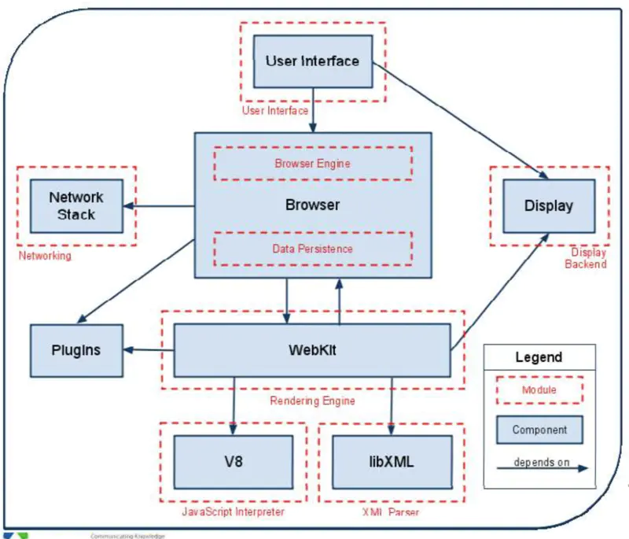
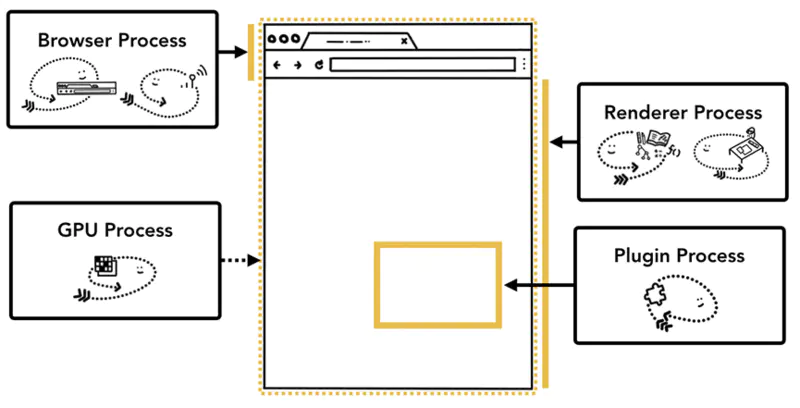

Chrome浏览器设计结构

1.用户界面(user interface) 浏览器中菜单栏、地址栏、向前/回退按钮、书签目录等除了页面显示窗口外的所有地方都属于用户界面。
2.浏览器引擎(browser engine) 浏览器引擎是各个组件之间通信的核心,它在用户界面与渲染引擎间传递指令。为渲染引擎提供接口,将用户界面上的给定的网址、用户浏览器操作（如刷新、向前、退后等）信息提供给为渲染引擎；同时,浏览器引擎 为用户界面提供各种如错误提示、资源下载进度等消息。还有,它可以在客户端本地缓存中读写数据。
3.渲染引擎(rendering engine) 渲染引擎负责显示请求的内容。例如,如果请求的内容是HTML文件,则它负责解析文件里的html、css等信息,并将网页内容渲染呈现出来。渲染引擎的内部包括了html解析器、css解析器等。
4.网络模块(networking) 处理网络请求,比如http请求网页、图片资源等。
5.JavaScript解释器(JavaScript interpreter) 网页中经常有JS脚本来动态操作网页,就是靠这个JS引擎来解析执行的。比如Chrome浏览器的V8引擎、Safari浏览器的JavaScriptCore引擎,IE的Chakra
6.界面后端(UI backend) 前面介绍的用户界面是展示给用户看到的,界面后端是浏览器的图形库,用来绘制基本的浏览器窗口内控件,如输入框、按钮、单选按钮、组合框和窗口等,不同浏览器绘制的视觉效果不太想同,但功能基本都是一样的。
7.数据存储(data persistence) 管理用户数据,将与浏览会话相关联的各种数据存储在硬盘上,例如保存书签、cookie、缓存、偏好设置等各种数据,可通过浏览器引擎提供的API进行调用。
新开一个tab，进程变化
浏览器从关闭状态进行启动，然后新开 1 个页面至少需要 1 个网络进程、1 个浏览器进程、1 个 GPU 进程以及 1 个渲染进程，共 4 个进程；
后续再新开标签页，浏览器、网络进程、GPU进程是共享的，不会重新启动，如果2个页面属于同一站点的话，并且从a页面中打开的b页面，那么他们也会共用一个渲染进程，否则新开一个渲染进程。
Chrome浏览器运行架构

最新的Chrome浏览器主要包括；1个浏览器主进程（Browser）、1个GPU进程、一个网络（NetWork）进程和多个插件进程。
浏览器进程：是主进程。主要负责界面显示、用户交互、子进程管理，同时提供存储功能；
渲染进程：核心人物是将HTML、CSS和JavaScript引擎V8都是及逆行在该进程中，默认情况下，Chrome会为每个Ta标签创建一个渲染进程。出于安全考虑；显然进程都是运行在沙箱模式下。（tab页）
GPU进程：处理gpu任务,负责3D绘制。其实，Chrome刚开始发布的时候是没有GPU进程的。而GPU的使用初衷是为了实现3DCSS的效果，只是随后网页、Chrome的UI界面都选择采取GPU来绘制，这使得GPU成为浏览器普遍的需求。最后，Chrome在奇多进程架构上也引入了GPU进程。
网络进程：面向渲染进程和浏览器进程等提供网络下载功能。主要负责网页的网络资源加载，之前是作为一个模块运行在浏览器进程在里面的，直至最近才独立出来，成为一个单独的进程。
插件进程：管理浏览器扩展程序。主要是负责插件的运行，因插件容易崩溃，所以需要通过插件进程来隔离，以保证插件进程崩溃不会对浏览器和页面造成影响